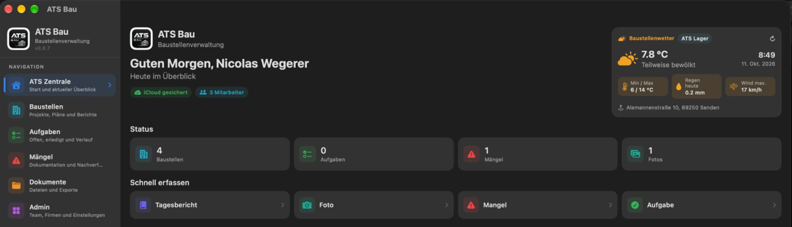
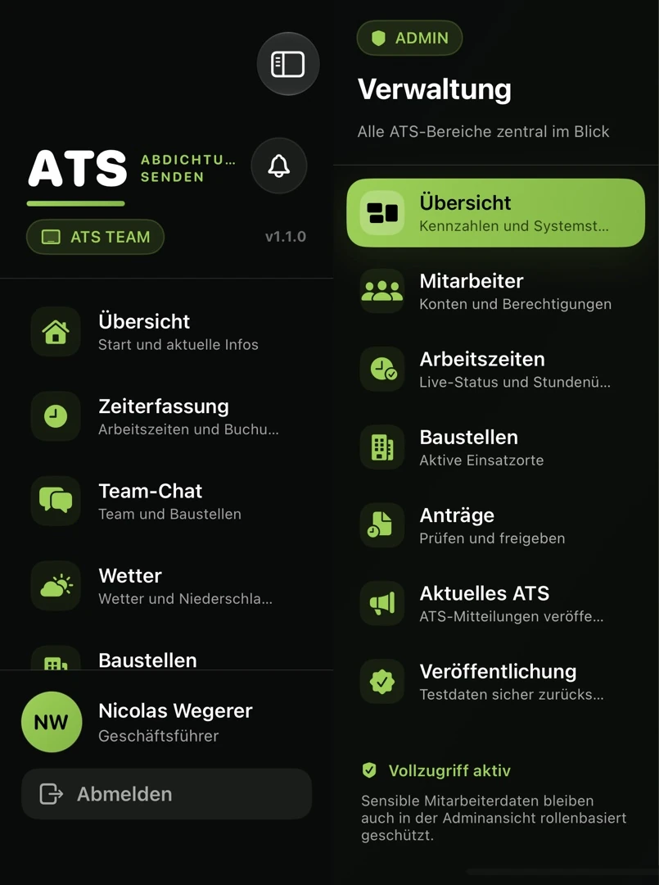

NW VISUALS · ENTWICKLUNG FÜR ATS
ATS Bau & ATS Team
Einblicke in zwei Fachanwendungen von Nicolas Wegerer.
Entwickelt für ATS Abdichtungstechnik Senden GmbH. Die Apps unterstützen Baustellendokumentation und interne Teamabläufe. Die Originalaufnahmen unten zeigen frühere Teststände und enthalten keine Mitarbeiter- oder Lohnunterlagen.
ATS BAU · BAUSTELLEN & DOKUMENTATION
Vom Tagesbericht bis zur Freigabe.
Baustellen organisieren, Aufgaben und Mängel festhalten, Fotos und Dokumente zuordnen und Tagesberichte bearbeiten. Der Berichtsablauf verbindet die Erfassung auf der Baustelle mit der Prüfung durch berechtigte Verantwortliche.

ATS TEAM · MITARBEITER & ORGANISATION
Die Arbeit im Team im Blick.
Arbeitszeiten, Team-Kommunikation, Baustellenzuordnung, Anträge und aktuelle Firmeninformationen. Die Verwaltung bietet eigene Bereiche für berechtigte Verantwortliche; persönliche Unterlagen gehören in geschützte Nutzerbereiche.

Entwicklungsstand & Zugang
ATS Bau: dokumentierter Stand 0.11.5 / Build 49, iPhone-Build im internen TestFlight. Berichtsfreigaben, produktives Push und vollständige iCloud-Wiederherstellung werden vor einer weiteren Freigabe am Gerät geprüft. Die Mac-Ansicht von oben zeigt den früheren Stand vom 11. Oktober.
ATS Team: dokumentierter Update-Stand 1.1.0 / Build 42 RC3 mit Anpassungen für iPhone, iPad und unterschiedliche Anzeigegrößen. Der Originalausschnitt stammt aus einem früheren Layouttest. Eine App- oder Store-Abnahme wird durch die Aufnahme nicht behauptet.
Beide Apps haben eigene Rollen, Datenbereiche und Freigaben. Diese Portfolioseite stellt keine Anmeldung zu den ATS-Diensten bereit. Mitarbeiterzugänge, betriebliche Daten und persönliche Unterlagen bleiben außerhalb der öffentlichen Präsentation.
Datenschutz & Kontakt
Für diese öffentliche Präsentation gilt der Website-Datenschutz von NW Visuals. Es werden hier ausschließlich statische App-Aufnahmen geladen; keine ATS-Konten oder Mitarbeiterdaten abgefragt.
Bei Nutzung der ATS-Apps gelten die dort bereitgestellten Datenschutz-, Support- und Löschinformationen sowie die betrieblichen Zugriffsrechte. Die App-Datenschutzhinweise sind nicht mit den Hinweisen dieser Portfolioseite gleichzusetzen.
Fragen zur Entwicklung: support@nwvisuals.de. Bitte keine Lohnunterlagen, privaten Chatverläufe oder vertraulichen Baustellendokumente mitsenden.